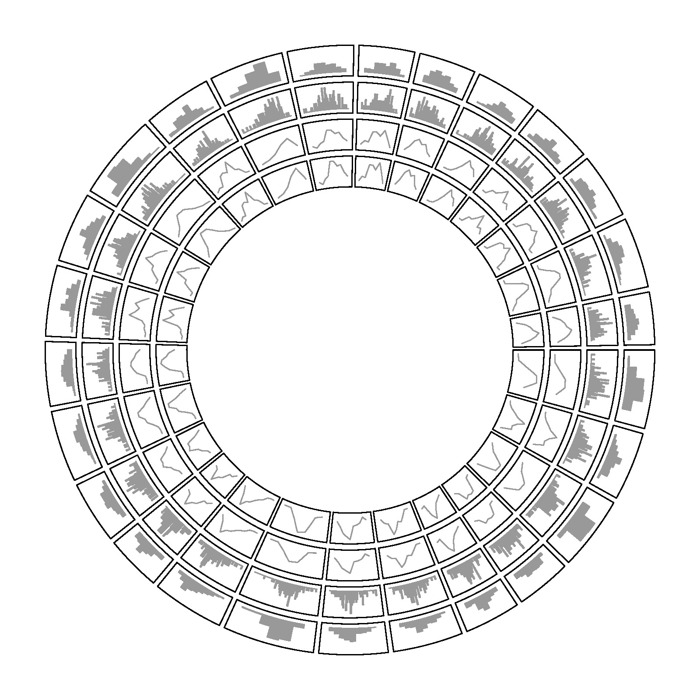

library(circlize)
x = rnorm(2600)
factors = sample(letters, 2600, replace = TRUE)
circos.initialize(factors = factors, x = x)
circos.trackHist(factors = factors, x = x, track.height = 0.1, col = "#999999", border = "#999999")
circos.trackHist(factors = factors, x = x, force.ylim = FALSE, bin.size = 0.1, track.height = 0.1, col = "#999999", border = "#999999")
circos.trackHist(factors = factors, x = x, draw.density = TRUE, track.height = 0.1, col = "#999999", border = "#999999")
circos.trackHist(factors = factors, x = x, draw.density = TRUE, force.ylim = FALSE, track.height = 0.1, col = "#999999", border = "#999999")
circos.clear()